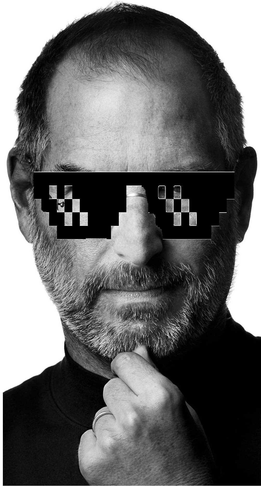
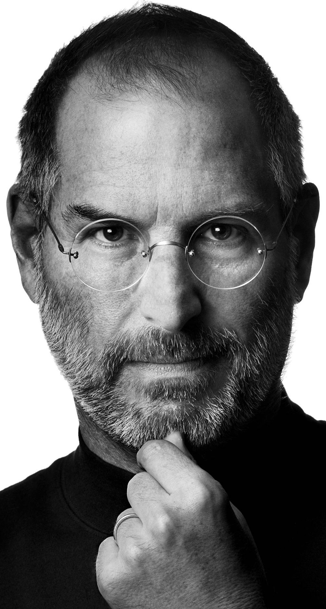

Steve Jobs
business magnate, industrial designer, investor, and media proprietor
Resume
― I observed something fairly early on at Apple, which I didn't know how to explain then, but have thought a about it since. While in most areas, the ratio between the excellent and the average is 2:1, in the software the ratio of good developer and the average programmer is rather 50:1 or even 100:1. So I built much of my success in finding these very talented people. And they enjoy working together because they have never had the chance to do that before.
Timeline of Steve Jobs
24 Feb 1955
Steven Paul was born in San Francisco, the son of Abdulfattah Jandali and Joanne Schieble. He is quickly adopted by Paul and Clara Jobs
1960
The Jobs family moves from San Francisco to Mountain View, a suburban town in Santa Clara county, more famous under the name Silicon Valley
Summer 1968
13-year-old Steve Jobs calls up Bill Hewlett and gets a summer job at the HP factory
1969
Steve Jobs meets Steve Wozniak, 5 years older, through a mutual friend. Woz and Steve share a love of electronics, Bob Dylan, and pranks
1972
Steve and Woz build and illegally sell 'blue boxes' that allow to make phone calls for free
1973
Steve spends the fall semester at Reed College, Oregon, then drops out. He will stay on campus and attend the classes that interest him for a while, then move to a hippie commune
1974
Steve gets his first job at video game maker Atari, and later makes a trip to India to 'seek enlightenment' with his college friend Dan Kottke
Mar 1976
Woz and Steve show the early Apple I board at the Homebrew Computer Club
1 Apr 1976
Apple Computer Inc. is incorporated by Steve Jobs, Steve Wozniak and Ron Wayne
Spring 1976
Steve and Woz start assembling Apple I computers in the Jobses' garage, and sell them to computer hobbyists, including 50 for the Byte Shop
28 Aug 1976
Steve Jobs and Woz show off the Apple I at the Personal Computing Festival in Atlantic City, with help from Dan Kottke
Jan 1977
Former Intel executive turned business angel Mike Markkula invests in Apple and hires former colleague Mike Scott as CEO. Woz is forced to leave HP to join Apple full time
17 Apr 1977
Apple makes a huge sensation at the West Coast Computer Faire with a prototype Apple II
1978
The Apple II becomes the first mass-market personal computer, with impressive sales around the US. Apple becomes a symbol of the personal computing revolution. At the company, work starts on the Apple III and the Lisa, while Jef Raskin begins writing The Book of Macintosh.
17 May 1978
Steve's ex-girlfriend Chris-Ann Brennan gives birth to their daugher Lisa. Steve refuses to acknowledge he is the father
1979
Sales of Apple II skyrocket after pioneer spreadsheet software Visicalc is introduced
Dec 1979
Steve Jobs is shown the first working graphical user interface at Xerox PARC
1980
Jef Raskin's Macintosh project is green-lighted. Lisa evolves into a GUI-computer, in part because of Steve Jobs' demands
May 1980
Apple launches the Apple III, which will prove a disastrous flop
12 Dec 1980
Apple goes public, increasing Steve Jobs' net worth from dozens of millions of dollars to over $200 million
Early 1981
Jef Raskin is forced out of his Macintosh project as Steve Jobs takes over
25 Feb 1981
Black Wednesday: 50 Apple employees laid off by CEO Mike Scott without notice. The board asks him to leave shortly afterwards. Mike Markkula becomes interim CEO
12 Aug 1981
IBM launches the IBM PC, the biggest threat to Apple's future yet
Feb 1982
A portrait of Steve Jobs ends up on the cover of Time Magazine, under the title 'Striking it Rich'. Steve trusts Time correspondent Michael Moritz to follow him on the Mac team for months, hoping to become Man of the Year
3 Jan 1983
Time instead makes The Computer 'machine of the year' and publishes a hatchet job on Steve Jobs, who becomes furious and suspicious of journalists for the rest of his life
19 Jan 1983
Launch of the Lisa computer. The Lisa team later merges with the Mac team under Steve Jobs's leadership
8 Apr 1983
PepsiCo CEO John Sculley becomes Apple's CEO after having been wooed by Steve Jobs for several months
24 Jan 1984
Macintosh is launched in great fanfare at Apple's annual shareholder meeting
24 Feb 1985
Steve Jobs celebrates his 30th birthday with Ella Fitzgerald as guest singer for the night
May 1985
Palace coup: Apple's board sides with John Sculley and strips Steve off all executive duties
Summer 1985
Alan Kay first introduces the Pixar team to Steve Jobs
17 Sep 1985
Steve Jobs resigns from Apple and starts NeXT with five other refugees from Apple. Apple announces it will sue NeXT
1986
Steve's mother Clara dies. A couple months later, Steve discovers his biological mother Joanne and his sister, novelist Mona Simpson. They will become very close
30 Jan 1986
Jobs buys the computer division of George Lucas' ILM for $10 million and incorporates it as Pixar
Aug 1986
Pixar unveils John Lasseter's short film Luxo Jr. at SIGGRAPH. It is praised by the expert audience as one of the first computer-animated work of art
Feb 1987
Ross Perot invests $20 million in NeXT, based on a $125 million valuation. The startup has still to release a product
Sep 1988
NeXT and IBM form a partnership to have NeXT's system run on IBM machines
12 Oct 1988
Steve Jobs introduces the NeXT Cube in San Francisco to great critical acclaim, pitching it as a workstation for higher education
Winter 1988
Pixar launches its new computer graphics workstation, the Pixar Image Computer II, and starts working on the RenderMan computer animation software
Dec 1988
At SIGGRAPH, Pixar releases its new short Tin Toy. It will end up winning 1988's Academy Award for Best Animated Short Film
Mar 1989
NeXT partners with retailer Businessland to sell to corporate America in addition to higher ed
Apr 1989
Steve Jobs is named 'Entrepreneur of the decade' by Inc. magazine
30 Apr 1989
Steve shuts down all of Pixar's hardware operations
Jun 1989
Canon invests $100 million in NeXT, now valued at $600 million
13 Sep 1989
Steve introduces the cheaper NeXTstation in San Francisco, to boost the modest sales of NeXT hardware
Mar 1991
Steve Jobs fires almost half of Pixar's staff and takes back all of the employees' stock in an effort to cut costs, as the company is still in the red 5 years after its launch
18 Mar 1991
Steve marries Laurene Powell in Yosemite under the blessing of Steve's old zen guru Kobin Chino. Laurene is already pregnant
May 1991
Pixar signs a deal with Disney to make a computer-animated feature film
Fall 1991
Laurene gives birth to Steve's second child and only son, Reed Paul Jobs
Jan 1992
NeXT licenses its operating system, NeXTSTEP, to run on x86 machines
11 Feb 1993
NeXT fires 300 employees as it discontinues all its hardware operations and becomes NeXT Software Inc. This is the nadir of Steve's career
Mar 1993
NeXT COO Peter Van Cuylenburg betrays Steve Jobs by trying to have the company bought by its giant competitor Sun. Sun CEO Scott McNealy warns Steve Jobs instead
5 Mar 1993
Steve's father, Paul Jobs, dies
Nov 1993
Jeffrey Katzenberg puts a halt to the development of Toy Story because of creative disagreements
Nov 1994
Pixar resumes work on Toy Story
Feb 1995
Steve starts focusing less on NeXT and more on Pixar before Toy Story is released. He becomes President & CEO of Pixar Animation Studios
Late 1995
Laurene gives birth to Erin Siena Jobs, her second child with Steve
29 Nov 1995
One week after Toy Story is out, Pixar goes public. Steve Jobs's worth rises to $1.5 billion, more than it ever was during his first tenure at Apple
1996
Steve's biological sister Mona Simpson publishes her third novel, A Regular Guy, whose main character Tom Owens is largely based on her brother
Early 1996
Steve Jobs negotiates a breakthrough deal between Pixar and Disney with its CEO Michael Eisner. The deal includes landmark rights for a studio, such as equal billing
Dec 1996
Apple, which was desperately looking for a modern operating system to buy, eventually buys NeXT for $400 million. Steve Jobs is named "informal adviser" to Apple CEO Gil Amelio
Jul 1997
Gil Amelio is ousted by the Apple Board of directors after a disastrous quarter. Steve Jobs is named interim CEO in his place and installs his NeXT executive team at the top of Apple
6 Aug 1997
Steve Jobs introduces Apple's new board of directors and a truce with Microsoft at Macworld Boston
Fall 1997
Apple starts its Think Different campaign to restore its damaged brand image. The new slogan will quickly enter popular culture and define the company for the next five years
8 Jan 1998
At Macworld San Francisco, Steve Jobs announces that Apple is profitable again, thanks to sales of the new Power Macintosh computers
May 1998
Eve Jobs, Laurene and Steve's youngest daughter, is born
6 May 1998
Steve Jobs introduces Apple's revolutionary iMac at the Flint Center auditorium in Cupertino, 14 years after he had introduced the Macintosh at that same place
5 Jan 1999
Steve Jobs introduces the new Power Mac G3 and the color iMacs at Macworld San Francisco
Apr 1999
Pirates of Silicon Valley, a TV movie starring Noah Wyle as young Steve Jobs, airs
21 Jul 1999
The original iBook is unveiled at Macworld New York with the tagline iMac to go. Steve Jobs invites Noah Wyle on stage to impersonate him again
5 Oct 1999
Introduction of the iMac DVs and of iMovie, the first of Apple's first Digital Hub app
5 Jan 2000
At Macworld San Francisco, Steve Jobs drops the 'interim' in his title and officially becomes Apple's CEO. He also demoes Mac OS X's revolutionary Aqua interface to a bewildered audience
19 Jul 2000
The Power Mac G4 Cube is unveiled at Macworld NY. It will be discontinued one year later because of disappointing sales
9 Jan 2001
Steve Jobs unveils Apple's Digital Hub Strategy at Macworld: the Mac is to become the center of consumers' emerging digital lifestyles
24 Mar 2001
After four years of hard work, Mac OS X 10.0, the new incarnation of NeXTstep, ships
19 May 2001
Apple opens its first Retail Stores in Tysons Corner, Virginia, and Glendale, California
23 Oct 2001
After an 8-month crash development program, Steve Jobs unveils iPod at a small media event on the company's campus. He has no idea how it will transform Apple
7 Jan 2002
Steve unveils the iMac G4 and the fourth iApp, iPhoto, at Macworld San Francisco
Mid 2002
Apple starts its popular 'Switch' campaign with ads picturing PC users that switched to the Mac
17 Jul 2002
Steve Jobs introduces the first Windows-compatible iPods at Macworld NY
28 Apr 2003
Apple opens the revolutionary online iTunes Music Store in the US, after negotiating landmark deals with all major music labels
30 May 2003
Opening day of Finding Nemo, Pixar's first Best Animated Feature Academy Award winner
Spring 2003
Following increasing tension with Michael Eisner, Steve Jobs announces that Pixar is seeking a new distributor to replace Disney after its contract expires
23 Jun 2003
Steve Jobs unveils the Power Mac G5, the world's fastest computer, at WWDC
16 Oct 2003
"The day hell froze over": Steve Jobs introduces iTunes for Windows and further demonstrates Apple's growing lead over its competitors in the digital music business
Fall 2003
Steve Jobs is diagnosed with pancreatic cancer, but stubbornly refuses any modern medical treatment for months. He tries alternative diets instead
6 Jan 2004
Steve unveils the iPod mini and the iLife suite at Macworld. The iPod mini will soon become the world's best-selling MP3 player and truly establish Apple as a consumer electronics powerhouse
Aug 2004
Steve Jobs finally has his pancreatic tumor removed by surgery
11 Jan 2005
At Macworld San Francisco, Steve Jobs unveils Apple's productivity suite iWork, the new Mac mini, and the iPod shuffle, the cheapest iPod ever at $49
24 Feb 2005
Steve turns 50
29 Apr 2005
Mac OS X 10.4 Tiger is released. A stable, fast release, it is immensely popular and marks the end of the four-year transition from the old Mac OS to UNIX-based Mac OS X
6 Jun 2005
At WWDC 2005, Steve Jobs announces that Apple is going to switch away from Motorola's and IBM's PowerPC architectures, and use Intel processors in its future Macs instead. This move will further help the growing adoption of the Mac
12 Jun 2005
Steve Jobs makes a memorable commencement speech at Stanford University. History will remember its closing remarks, Steve's advice to the young students: 'Stay hungry, stay foolish', a quote from the last page of the Whole Earth Catalogue from his youth
7 Sep 2005
Steve introduces the Motorola ROCKR, an iTunes-compatible cell phone, and the iPod nano
12 Oct 2005
Steve Jobs invites Disney's new CEO Bob Iger on stage at an Apple Music Event where he also introduces the new iPod videos and the iTunes movie store
10 Jan 2006
Steve Jobs unveils the first two Intel Macs at Macworld, the iMac and the new MacBook Pro
24 Jan 2006
The Walt Disney Company acquires Pixar for $7.4 billion. Pixar's largest shareholder Steve Jobs joins the Disney board while Ed Catmull becomes president of the Walt Disney Animation Studios, and John Lasseter its chief creative officer. Just before the announcement, Jobs secretly told Disney CEO Bob Iger that his cancer had returned
28 Feb 2006
Apple releases its first living-room product, the iPod hi-fi, discontinued a year and a half later
18 Apr 2006
Steve Jobs announces Apple's intention to erect a second campus in Cupertino
Mid 2006
Apple starts its famous 'Mac vs PC' campaign, a series of TV commercials featuring Justin Long as Mac and John Hodgman as PC. The campaign will last for three years and mark popular culture
7 Aug 2006
Apple completes the transition of its entire product line to the Intel platform with the new Mac Pro
9 Jan 2007
In his most memorable keynote presentation ever, at Macworld 2007, Steve Jobs introduces iPhone and its revolutionary touch-screen interface. He also introduces Apple TV and announces the company's name change from Apple Computer Inc. to Apple Inc. to better reflect its new nature
Apr 2007
The SEC files charges against Apple's Nancy Heinen and Fred Anderson for options backdating
29 Jun 2007
iPhone is released in the US, the same day as Pixar's 8th feature film, Ratatouille
5 Dec 2007
Steve Jobs is inducted in the California Hall of Fame by Gov. Schwartzenegger
15 Jan 2008
At Macworld 2008, Steve Jobs introduces MacBook Air, with the tagline 'the world's thinnest notebook'. Three years later, it will come to redefine all of Apple's notebook product line
6 Mar 2008
Apple announces it will open the iPhone platform to outside developers with the App Store. VC fund KPCB starts iFund to invest in the new mobile app economy that they (rightly) believe will sprout from it
9 May 2008
The press starts speculating about Steve Jobs's health as he appears very thin to unveil the iPhone 3G with an entry price of $199 on stage at WWDC
Aug 2008
The SEC clears Steve Jobs of any responsibilities in the options backdating scandal
Late 2008
Apple starts its popular 'There's an app for that' campaign to illustrate the growing popularity of the App Store and the thousands of iPhone apps it offers
5 Jan 2009
Steve Jobs announces he will not speak at Macworld 2009 because of his health, and takes a six-month medical leave of absence
Apr 2009
Steve receives a liver transplant at the Methodist University Hospital in Memphis, Tennessee. He was weeks away from dying when he got the surgery
3 Aug 2009
Google CEO Eric Schmidt leaves Apple's board because of conflicting interests due to Android
28 Aug 2009
Apple releases Mac OS X 10.6 Snow Leopard, stripped off any code from the original Mac OS
9 Sep 2009
Back at Apple, Steve Jobs makes the first public appearance after his transplant to introduce new iPods at the 'It's Only Rock'N'Roll' event
27 Jan 2010
After months of wild rumors, Steve Jobs unveils iPad, 'the biggest thing Apple's ever done'. The tablet runs the same operating system as iPhone
16 Jul 2010
One month after the release of the new iPhone 4, Steve Jobs holds a press conference to address the smartphone's supposed reception issues, the so-called 'Antennagate'
17 Jan 2011
Jobs surprises the world by announcing his new medical leave of absence, without any end date
2 Mar 2011
Despite his medical leave, Steve Jobs takes the stage to unveil the new iPad 2
6 Jun 2011
At his last keynote at WWDC 2011, a freil Steve Jobs unveils Apple's cloud offering, iCloud, the foundation for the next decade of Apple products
7 Jun 2011
Steve Jobs appears at the Cupertino City Council to unveil Apple's plans for its new 'Spaceship' campus. This is his last public appearance
24 Aug 2011
Steve Jobs resigns as CEO of Apple, with the words 'I have always said if there ever came a day when I could no longer meet my duties and expectations as Apple's CEO, I would be the first to let you know. Unfortunately, that day has come.' Tim Cook becomes Apple CEO
5 Oct 2011
Steve Jobs dies at home, surrounded by his family
16 Oct 2011
A private service is held at Stanford University's Memorial Church in memory of Steve Jobs, attended by many of his friends, former colleagues and industry peers
24 Oct 2011
After two years of work, and forty interviews with Steve Jobs, Walter Isaacson publishes his authorized biography of the Apple and Pixar co-founder, simply named Steve Jobs
Steve Jobs was a college dropout and attended Reeds College for just 18 months. He continued his education by informally auditing classes. In Reeds, the course that attracted him the most was calligraphy. He used to audit calligraphy classes, which famously went on to influence the typography and font of Apple products.
Steve Jobs was a pescetarian and his favorite food was fish. He also liked carrots and fruits and spent some time as a fruitarian, meaning he only ate fruits, nuts, seeds, vegetables, and grains.
Steve Jobs had close to 300 patents under his name. The glass staircase at the Apple store is one such patented attraction that pulls passers-by into the store.
Jobs has a dedicated team to study the excitement and emotion behind opening a box and finding the products inside. This emotion is very common with Apple products today.
Even though he fell out of his own company, he took it as a blessing in disguise and later in 1997 joined back as the CEO. He later said that the feeling was very liberating and it was the most creative period of his life.
A lot has been debated about how Steve Jobs decided to name the company. However, it is said that being a fruitarian, he used to visit organic farms to collect fruits. On one such visit, it struck him to name his company Apple.
His signature dressing style included a black turtleneck, jeans, and sneakers. He was known for his simplicity with the turtle neck and Levis jeans. It is said that he had close to 100 Levis jeans throughout his lifetime.